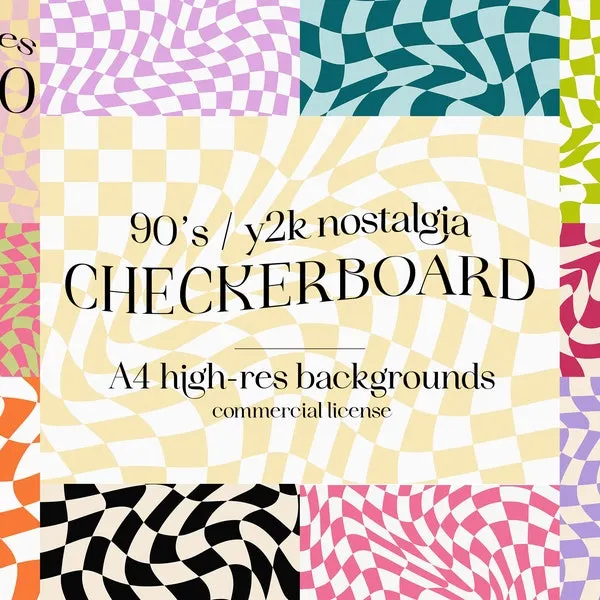
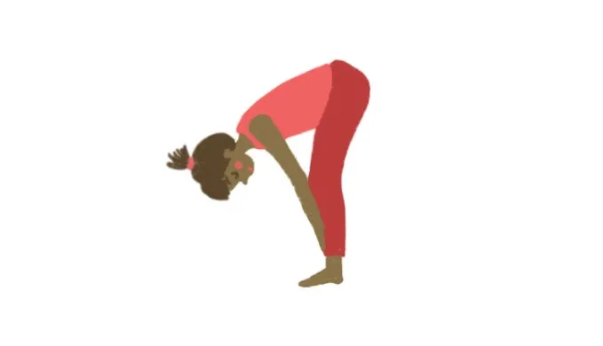
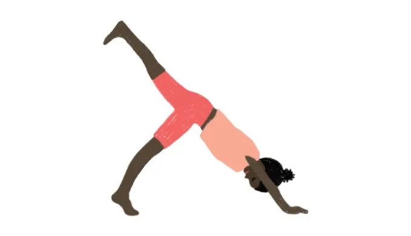

"CHILDREN"
1. Teach children to take slow, deep breaths. You can make it fun by having them pretend to blow up a balloon with their breath or imagining they are smelling a flower and blowing out a candle.
2. Help children imagine a peaceful place or scenario. You can use prompts like, "Imagine you're floating on a cloud" or "Picture yourself in a cozy, safe cave."
3. Use props like bubbles, pinwheels, or feathers to make deep breathing exercises more engaging and fun.
4.Establishing a regular bedtime routine can signal to a child's body that it's time to wind down and relax.
5. Ensure that screen time, especially before bedtime, is limited. The blue light emitted by screens can disrupt sleep patterns.
Some videos may include:-
Exercise to Manage Anxiety
Emotion Regulating Activity To Calm Down!
Brain Break Hand Exercise
5 Incredibly Fun GAMES for Self-Regulation
Deep Breathing Exercise for Kids and Teens
The Clap Yoga Song
Practices for Children:-


